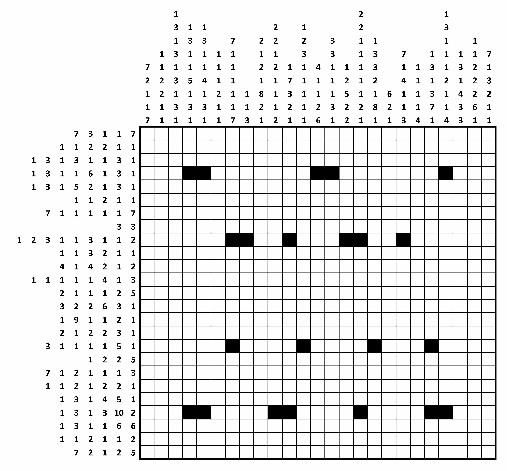
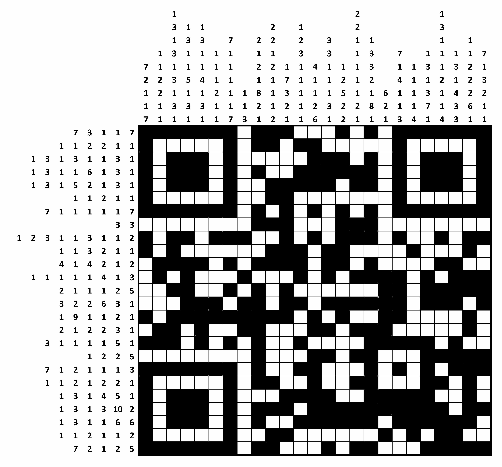

GCHQ Christmas Puzzle
I noticed GCHQ's christmas puzzle in a news article this year and having 3 weeks off at Christmas decided it would be good to keep me busy. The puzzle actually ended up being a string of increasingly difficult puzzles and brain teasers and I did have to result to cheating but I believe it would be GCHQ approved cheating.
The Grid
 The first part of the puzzle was the grid and the instructions for completing it were as follows:-
In this type of grid-shading puzzle, each square is either black or white. Some of the black squares have already been filled in for you.
Each row or column is labelled with a string of numbers. The numbers indicate the length of all consecutive runs of black squares, and are displayed in the order that the runs appear in that line. For example, a label "2 1 6" indicates sets of two, one and six black squares, each of which will have at least one white square separating them.
The full instructions and original grid image can be found at http://www.gchq.gov.uk/press_and_media/news_and_features/Pages/Directors-Christmas-puzzle-2015.aspx
Starting with a blank grid was quite daunting and I was trying to think where to start, I decided I would start by trying to figure out the maximum amount of blank squares each row had.
I started with the top row 7, 3, 1, 1, 7 the first thing I did was add all of those numbers up to give me a total of 19 so I knew there were 19 non blank squares. Next I counted the actual squares in the row which came to 25 so I could now subtract 19 from that and I knew there needed to be at least 6 blank squares. After this I applied the at least 1 blank space between numbers rule so I took the number of numbers given and subtracted it from my running total of 6 to give me 1, I then realised that because numbers could start or end in the first or last square respectively that I could discount one of the blank squares in between the numbers so I added another 1 to the running total to give me 2. So I knew the first row had at 2 blank squares in it.
I now had a formula I could use so I opened Ruby and put together a quick function for it
def max_blank(shade_list)
sum = shade_list.reduce(:+)
return (25 - sum) - (shade_list.count - 1)
end
max_blank([7, 3, 1, 1, 7])
2
I worked down the rows marking the max blank on each row until I hit an anomaly, the row with numbers 7, 1, 1, 1, 1, 1, 7 had 0 as the maximum blank rows, does this mean I can just fill it straight in? I gave it a go and it did indeed fill in perfectly. I found multiple rows and columns that were the same and could just be filled in straight off the bat, they were as follows:-
- Row: 7, 1, 1, 1, 1, 1, 7
- Row: 1, 3, 1, 3, 10, 2
- Column: 1, 3, 1, 3, 1, 3, 1, 3, 1
- Column: 7, 1, 1, 1, 1, 1, 7
- Column: 1, 3, 3, 2, 1, 8, 1
This gave me a good footing to get started, after working out some of the other squares it started to become aparent it was going to make a QR code so I took a slight shortcut and filled in the bottom-left top-left and top-right corners as they were all a 7x7 square perimeter and then a 3x3 cube in the middle. From this point I had no further tricks I just worked out what the other squares were one by one by marking off what they could be kind of like how you would do a soduko puzzle.
And there we had it a QR code, I scanned it on my phone and got the URL www.gchq.gov.uk/puzz
Multiple Choice
The next part of the puzzle was some multiple choice questions, I have split the below into the questions and my answers for them
Q1. Which of these is not the odd one out?
- STARLET
- SONNET
- SAFFRON
- SHALLOT
- TORRENT
- SUGGEST
After re-reading the wording a few times to try and make sense of the seeming contradiction of the not odd one out and noticing that I could find some odd ones out I realised it was looking for me to mark off everything that was an odd one out in some way to leave me with only one, the not odd one out(sorta making it the odd one out but whatever)
So first pattern was words ending in a T, all but SAFFRON end in a T so we can mark of SAFFRON as not being the not odd one out...
The next pattern I noticed was words with double letters, all but STARLET have double letters so it can go STARLET
Next I noticed words starting with S, all but TORRENT start with S so it goes TORRENT
Next I noticed the words were 7 letters long, all but SONNET so it can go SONNET
Finally after googling each word and trying some more complex ASCII comparisons I noticed they are all noun's except SUGGEST which is a verb so finally it can go SUGGEST leaving me with just D. SHALLOT
Q2. What comes after GREEN, RED, BROWN, RED, BLUE, -, YELLOW, PINK?
- RED
- YELLOW
- GREEN
- BROWN
- BLUE
- PINK
I won't lie I didn't get the answer to this one, I have GCHQ approved cheated my way to finding it(more below) but I have no idea why it is the answer.
The first thing I tried to do was convert the colours to their hex values, add up each side and then finally subtract them and then convert the answer back into a colour, however I quickly ran into troubles because brown, yello and pink are very implicit they can have many shades and the end result was affected quite drastically by this.
Another theory I tried was that they were all the colour of snooker balls so I added their snooker ball values before subtracting them and then converting the answer back to a snookerball colour. This actually worked and gave me the colour brown however the correct answer for this question is E. BLUE
Q3. Which is the odd one out?
- MATURE
- LOVE
- WILDE
- BUCKET
- BECKHAM
- SHAKA
This is another one I had a lot of trouble with and did not get the answer to.
One of my thoughts was that they all looked like surnames apart from MATURE so I thought MATURE might be the answer, it wasn't
I did try some ASCII comparisons as well by getting the decimal total of all the ASCII characters but there was nothing obviously similar between them
The correct answer for this question is F. SHAKA
Q4. I was looking at a man on top of a hill using flag semaphore to send a message, but to me it looked like a very odd message. It began "ZGJJQ EZRXM" before seemingly ending with a hashtag. Which hashtag?
- #SGM
- #SEM
- #SEN
- #SGN
- #TEN
- #TGN
So the first thing I did was google flag semaphore and I found a good Wikipedia page on it, I then thought that the text was cyphered and that the # answer was either the key or needed to be decrypted with the key to make sense so I went on a wild goose chase trying to decrypt the words
I reckoned(or hoped) they wouldn't have anything more complex than a ceaser cypher so I went to work trying to find out what the key was for the first word as it had a double letter making it an easy guessing target. I googled for a list of 5 letter words with double letters and found http://www.panopy.com/iphone/secret-ada/double-letter-words.html which actually went as far as to allow me to see 5 letter words with doulbe letters in the 3rd position
With my relatively small list of words I stuck them into ruby and started looping over them to see if they fit the word e.g. if the double letters were ll's then the key would be +2 as in 2 letters down from J so that must mean the Q would become S and Z would loop round to B. Using this I got a single result for the first word BILLS
I then used the same key to try and decrypt the 2nd word which gave me GBTZO which meant nothing to me but I googled it and it did have a result kind of related to bills The life path number of GBTZO is 7. A person with the destiny number 7 learns very early on in life that one has to face a world dominated by material things and money head on without any fear that they could not prevail there.
I tried the same key on each answer none giving anything related to 7, bills or of any meaning. I also tried +7 and -7 as key but again nothing of any sense came out.
After all of this I read 1 line on the Wikipedia page which pointed me in the right direction The following 30 semaphore characters are presented as they would appear when facing the signalman are this so I thought what would happen if you weren't facing him from the front but from behind, each symbol would be reversed. And that was it all I had to do was look up each letter given and find it's opposite flag positions. ZGJJQ EZRXM spelled out HAPPY CHRIS so it was pretty clear what the # needed to spell, turns out #SGM spells out TMAS
Q5. What comes after 74, 105, 110, 103, 108, 101, 98, 101, 108, 108?
- 108
- 101
- 115
- 123
- 111
- 103
This next one was quite easy for me, I already had my ASCII table open in another tab and I noticed straight away the numbers were all in the range for ASCII letters so I threw together a quick ruby function
def dec_to_string(decs)
out_string = ''
decs.each do |dec|
out_string += dec.chr
end
out_string
end
dec_to_string([74, 105, 110, 103, 108, 101, 98, 101, 108, 108])
"Jinglebell"
So it was quite obvious the answer needed to be s, a quick reference to my ASCII table showed that as 115
Q6. What comes next: D, D, P, V, C, C, D, ?
- F
- E
- D
- C
- B
- A
I was stuck with this one for quite a while and it was actually my little sister that pointed me in the right direction, they are all the first initials of santas reindeer Dasher, Dance, Prancer, Vixen, Comet, Cupid, Donner and then of course the missing one Blitzen so the answer is E. B
Cheating :(
require 'mechanize'
mechanize = Mechanize.new
base_url = 'http://s3-eu-west-1.amazonaws.com/puzzleinabucket/'
options = ['A', 'B', 'C', 'D', 'E', 'F']
combos = options.repeated_permutation(6).to_a
combos.each do |combo|
combo_string = combo.join
puts combo_string
url = base_url + combo_string + '.html'
page = mechanize.get(url)
if !page.at('.gx-rteElement-P strong')
puts 'Found at: ' + combo_string
break
end
end
Found at: DEFACE
So as I mentioned above I couldn't get all the answers so I cheated, in my defence I think it is GCHQ approved cheating and they made it too easy to do so. When you pick an answer you get redirected to the next question with your previous answer chain appended to the url and so when you do the last question you end up on a page with a URL like http://s3-eu-west-1.amazonaws.com/puzzleinabucket/ABCDEF.html and some text saying you got some answers wrong. The solution, loop through every answer combination and try and hit the page and search for the text saying the answers wrong, if it can't be found then you probably have the right answer combination.
So to start off with there are 6 questions each with 6 possible answers so 6^6(46656) combinations that need to be looped through. In heinseight I should taken out Q1, Q4, Q5 and Q6 so I only had 64 to try... but whatever I wasn't 100% they were right anyway.
For making the web request I used a gem called mechanize, it was very easy to use and doesn't really need explaining it is fairly obvious what it is doing, as for the 6^6 combinations ruby has a fantastic array method for this called repeated_permutation it produces an array of arrays with the inner arrays containing each possible combination of the original array it takes 1 argument which is the size of the produced inner arrays so basically the number of questions.
So I got the final url as http://s3-eu-west-1.amazonaws.com/puzzleinabucket/DEFACE.html
The URL
In this part the goal is to find missing words from each sequence which when validted will give you a URL to go to. Each question in this section are really cryptic, they are as follows
- Complete the sequence:
Buck, Cod, Dahlia, Rook, Cuckoo, Rail, Haddock, ? - Sum:
pest + √(unfixed - riots) = ? - Samuel says: if agony is the opposite of denial, and witty is the opposite of tepid, then what is the opposite of smart?
- The answers to the following cryptic crossword clues are all words of the same length. We have provided the first four clues only. What is the seventh and last answer?
- Withdraw as sailors hold festive sing-song
- It receives a worker and returns a queen
- Try and sing medley of violin parts
- Fit for capture
- ?
I only managed to get one answer here and that was for B, each word is an anagram of a french number pest=sept(7), unfixed=neufdix(10), riots=trois(3) so if we stick this into the maths equation we get 11 which is onze in french, which anagrams quite obviously to zone so I worked it out as zone.
I was really stuck with any of the other answers so I decided to see if I could cheat again, I figured out the form was being validated by Javascript and that when the right answer was given it should return http://www.WORDA-WORDB-WORDC.org.uk/WORDD I had a crack at reverse engineering the validation but didn't get very far.
I turned to Google fu next, I searched for site:"*"-zone-"*".org.uk which returned exactly 1 result http://www.cub-zone-often.org.uk/ seeing as the first question had all animals I was pretty sure this was the right site, I also did a domain checkup and it was indeed owned by GCHQ, so all I needed to do now is work out the path/the answer to D.
More cheating... I grabbed the validation code and expected result of the validation and used a ruby gem called execjs to be able to evaluate it in ruby, I then looped over the dictionary trying each word with my already confirmed results and checked if the validation passed. I left this running for quite a while before getting the answer layered again in hindsight I should have tried to work out how many letters it would be at least.
def submit(a, b, c, d)
js = "
go = function() {
function check(dat) {
/* basic check function */
resultA = 3141592654;
resultB = 1234567890;
for (i=0; i<2; i++) {
initA = resultA;
initB = resultB;
for (j=0; j<dat.length; j++) {
resultA += dat.toLowerCase().charCodeAt(j);
resultB = (resultA * 31) ^ resultB;
tmp = resultA & resultA;
resultA = resultB & resultB;
resultB = tmp;
}
resultA = resultA ^ initA;
resultB = resultB ^ initB;
}
return [resultA, resultB];
}
answer = '#{a}' + '\\0' + '#{b}' + '\\0' + '#{c}' + '\\0' + '#{d}';
res = check(answer);
return res
}
"
context = ExecJS.compile js
result = context.call 'go'
if result == WANTRESULT
return true
else
return false
end
end
def getchecking
a = 'cub'
b = 'zone'
c = 'often'
WORDS.each do |word|
print "Trying #{a} #{b} #{c} #{word}\r"
if submit(a, b, c, word)
puts "you gone done it with #{a} #{b} #{c} #{word}!"
break
end
end
return nil
end
getchecking()
you gone done it with cub zone often layered!
So the full URL is http://www.cub-zone-often.org.uk/layered
The IP Address
The next part of the puzzle consisted of 3 sequences in which we have to find the missing numbers the answers to which should give you an IP address which when browsed too will take us to the last part of the puzzle. The questions were as follows
- 2, 4, 8, 1, 3, 6, 18, 26, ?, 12, 24, 49, 89, 134, 378, 656, 117, 224, 548, 1456, 2912, 4934, 8868, 1771, 3543, ...
- -101250000, -1728000, -4900, 360, 675, 200, ?, ...
- 321, 444, 675, 680, 370, 268, 949, 206, 851, ?, ...
So the first thing I noted is that one of the answers must be a decimal in order for us to get a valid IP address, I started by limiting the possiblities I had noted all of the pages so far were hosted by amazon so I found a list of IP addresses by region https://ip-ranges.amazonaws.com/ip-ranges.json and took out all of the EU west ranges
The page used the exact same JS validation code as before so I was able to re-use that and just change it to accept 3 inputs. I also set the wanted result as WANTRESULT_IP = [1824745082, 560037081]
def submit_ip(a, b, c)
js = "
go = function() {
function check(dat) {
/* basic check function */
resultA = 3141592654;
resultB = 1234567890;
for (i=0; i<2; i++) {
initA = resultA;
initB = resultB;
for (j=0; j<dat.length; j++) {
resultA += dat.toLowerCase().charCodeAt(j);
resultB = (resultA * 31) ^ resultB;
tmp = resultA & resultA;
resultA = resultB & resultB;
resultB = tmp;
}
resultA = resultA ^ initA;
resultB = resultB ^ initB;
}
return [resultA, resultB];
}
answer = '#{a}' + '\\0' + '#{b}' + '\\0' + '#{c}';
res = check(answer);
return res
}
"
context = ExecJS.compile js
result = context.call 'go'
if result == WANTRESULT_IP
return true
else
return false
end
end
def getchecking_ip
options = (1..255).to_a.repeated_permutation(2).to_a
options.each do |opt|
a = "52"
b = "30.#{opt[0]}"
c = "#{opt[1]}"
print "Trying #{a}.#{b}.#{c} \r"
if submit_ip(a, b, c)
puts "you gone done it with #{a} #{b} #{c}!"
break
end
end
return nil
end
getchecking_ip()
you gone done it with 52 30.87 208!
In the above code I manually changed the a, b and c variables to try different combinations of where the decimal answer was and to change IP ranges however it was the a="52" b="30.#{opt[0]}" one that worked. So the IP address for the next stage is 52.30.87.208 the page told me to append /next.html to it so I browsed to 52.30.87.208/next.html
The Final Stage
And that was it I was on the final stage